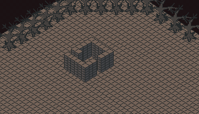

Variety of Francais that evolved out of the spoken French of immigrants from Europe in Japanese California.
Le, Anu - the masculine
La, Ana - the feminine
Les, Anos - the nuetral
Je, Watashi - I
Moi, Jibun - Me, My
Tu, Anata - You
Vous, Anata Tachi - You all
Nous, Watashitachiha - We, Our
Il, Kare - He
Ils, Kare Wa - Him
Elle, Kanojo - She
Elles, Kanojo wa - Her
Blanc De Froid, Anos Shiro Samui - Cool White
Blanc De Chaud, Anos Shiro Atsui - Warm White
Gris De Froid, Anos Gure Samui - Cool Grey
Gris De Chaud, Anos Gure Atsui - Warm Grey
Noir De Froid, Anos Kuro Samui - Cool Black
Noir De Chaud, Anos Kuro Atsui - Warm Black
Rouge, Aka - Red
Vert, Midori - Green
Bleu, Ao - Blue
Orange, Orenji - Orange
Cyan, Shian - Cyan
Jaune, Kiiro - Yellow
Magenta, Sakishishoku - Magenta
le sureaukuroi, anos niwatokonoiros - Elderberry Black ( Cold )
le Furenchibisutoru - Bistre-Black ( Warm ), made by blending beechwood and sawtooth soot allowed to ferment.
nuetrefuka - Creating the illussion of nuanced nuetrality by blending cold and warm tones.
Anos Chaironoiros - Brown-Black; Black-Flesh. Synonym for Furenchibisutoru. Paired with Metallic blue.
| Anglais | Translation | Hex Values | Closest Sennelier | | ---------------------- | ---------------------- | ---------------- | -------------------------------------- | | French Eclipse | Anos Nisshokos Noiros | #0A0C09, #28282A | Bistre 1 | | Eclipse Light | Le Eclipse Raito | #AAAAAA, #D5D5D5 | Bistre 7, Iredescent Silver | | Scarlet And Tomato | Le Ecarlet-Tomate | #DA211F, #ED3730 | Carmine | | Swampy Lemon | Anos Numachi Citronos | #768A03, #8EB813 | Apple Green, Leaf Green 6 | | Twilight Blueberry | Le Myrtille Towairaito | #0E3B74, #272974 | Intense Blue 1, Iridescent French Blue | | Ochre And Butterscotch | Anos Odo-batasukotchos ) #E4B732, #FABB51 | Bistre 5, Naples Yellow 1 And 6 |
Le Cadrepasuteru, Les Cadrepasuteres - Framed Pastels
Anos Utashosetsu En Quatrevers - Four Frame Novels ( Mortecadres )
Anos Sumie-Pasuteros - A form of monochromatic painting designed to mimmick the look and feel of traditional Japanese paintings, but with a look and feel more reminiscent of the vibrancy of soft pastels such that it has a similar vibrancy and shelf life. The main difference being that often they use Sanguine and and lime green tones for occassional sequences in color used sparingly. Ana Fezaroseau - A type of reed pen that can be loaded with Sumi ink with a watercolor brush or to soften pastels.
Les Cadrepasuteros De Surfsunos - Comic magazines specializing in surfsports for both genders.
Le Cadrepasuteru De Surfsunu - Comic magazines specializing in surfsports for boys and trans men.
La Cadrepasutera De Surfsuna - Comic magazines specializing in surfsports for girls and trans women.
Des Photos De Alienes - Related to the concept of "Soen'na byōga", graphic novels designed with the intent to show the plight of creators that feel like foreigners in their own lands.
Soen'na byōga - Alienating Pictures. Manga about isolation, specifically of foreign creators.
Les Albums Pastels De Terre / Les Albums Du Pastiche De Terre - Anu Arubupasuteru / Anos Arubupasuteros - Albums of Earth Pastiche. Generally referring to four frame stories drawn with an unusually dark aesthetically ( usually Earth pastels ), inspired by photo albums, and with a darker than usual plot.
Anu Saifudrame, Anos Saifudramos ( Sah-Ee sfu-deh dah-moh ) - Theatre productions about stolen wallets and handbags; a style of graphic novel in comic strip form about said Victorian or Belle Epoque periods geared toward women readers. These are most commonly womens murder mysteries. Ranehanoku - Also comics "Manga No Uta" or "Uta No Komikku", is the manga equivalent to comics poetry. More specifically, my approach is to blend French and Japanese poetry forms into a cohensive format suitable for sequential art. Latelly my poetry form blends Rondelet, Haiku / Senryu, and Alexandrine Line.
Le Pere, Anu Chichioya - Father
La Mere, Ana Hahaoya - Mother
Le Souer, Ana Suppai - Sister
La Frere, Ana Koyodai - Brother
Le Cousin, Anu Itoko - Cousin, Male Cousin
La Cousine, Ana On'na No Itoko - Female Cousin
Le Oncle, Anu Oji - Uncle
La Tante, Ana Oba - Aunt
Surfsuna - Sand surfing.
Bodo De Surfsuna - Sandboard
Bodo De Surfsuna Kuro - Black Sandboard
Bodo De Surfsuna Rouge - Red Sandboard
Bodo De Surfsuna Jaunekiiro - Lime Green Sandboard, Olive Drab
Paripari-Douce - Crispy and soft ( General ) - Describes callous people who are really kind.
Paripari-Moelleux - Crispy outside, chewy inside. ( Informal ) - Similar to Paripari-Douce, but for close friends.
Bijutsu Politique - Art Of Politics, specifically creative application of politics.
La Mere Bijutsu Politique - The mother of creative politics.
La Nagasaki De Japan -- Post-Apocalyptic France left over from World War III. With Paris essentially in ruins, with the majority of French living near Sands Of Pilat.